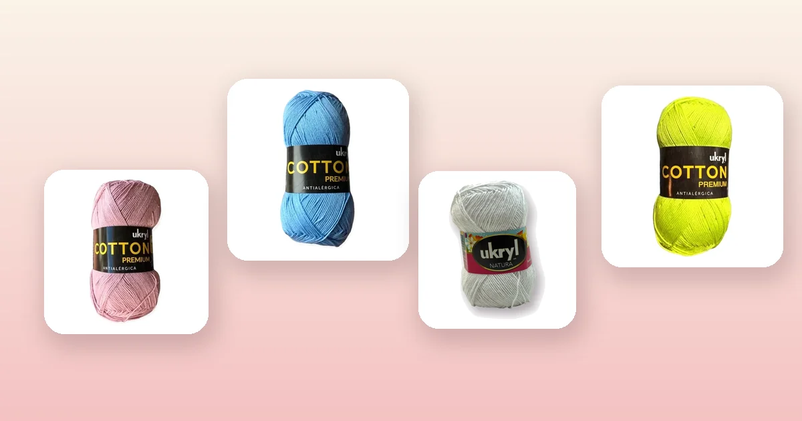

Proyectos de crochet
Cómo tejer una diadema a crochet paso a paso
Una diadema a crochet es el proyecto perfecto para principiantes: se teje en menos de una hora, gasta muy poco hilo y el resultado es un accesorio hermoso para regalar o vender. En esta guía te enseñamos 3 modelos — diadema simple, turbante con nudo y diadema trenzada — con tabla de medidas por edad, el paso a paso completo y qué hilo elegir.

Materiales y qué hilo elegir
Para una diadema a crochet necesitas muy pocos materiales. Es uno de los proyectos más económicos que puedes hacer porque gasta entre 15 y 30 gramos de hilo, así que con un solo ovillo puedes tejer varias.
- Ganchillo de 3 a 4 mm para hilo de algodón. Con ganchillo de 3,5 mm se logra un tejido firme pero con buena caída, ideal para que la diadema mantenga su forma. Si no sabes cuál elegir, revisa la guía de qué aguja o ganchillo usar.
- Aguja lanera de punta roma para esconder hebras y coser los extremos.
- Cinta métrica para medir la circunferencia de la cabeza.
- Tijeras.
El hilo ideal para diademas es el algodón: no pica, tiene buena definición de puntos y es fresco para usar en la cabeza. Estas son las mejores opciones del catálogo:
- Hilo de Algodón 100%: Hilo de Algodón Palo Rosa, Hilo de Algodón Celeste o Hilo de Algodón Menta, con 200 m por ovillo. El algodón tiene la firmeza justa para que la diadema no se estire y mantiene su color lavado tras lavado.
- Mezcla algodón-acrílico: Ukryl Natura Blanco o Ukryl Natura Rosado, 50% algodón y 50% acrílico con 200 m. Tiene un poco más de elasticidad que el algodón puro, lo que la hace más cómoda si la usas muchas horas. Consulta toda la línea en lana Ukryl.
- Lana acrílica suave para diademas de invierno: Lana Star Revesderecho Rosado o Lana Star Revesderecho Menta, con 200 m por ovillo. Para diademas más gruesas y abrigadas tipo ear warmer.
Si quieres saber más sobre las diferencias entre tipos de hilo, revisa la guía de tipos de lana para tejer.
Tabla de medidas por edad
La diadema debe quedar ajustada pero sin apretar. Mide la circunferencia de la cabeza con una cinta métrica pasándola por la frente, justo encima de las orejas, y resta 2 a 3 cm porque el tejido a crochet tiene elasticidad natural.
| Edad | Circunferencia | Largo de la tira | Ancho sugerido |
|---|---|---|---|
| Bebé (0 – 6 meses) | 35 – 40 cm | 33 – 37 cm | 4 – 5 cm |
| Bebé (6 – 12 meses) | 40 – 45 cm | 38 – 42 cm | 4 – 6 cm |
| Niña (2 – 6 años) | 48 – 52 cm | 45 – 49 cm | 5 – 7 cm |
| Niña (7 – 12 años) | 52 – 54 cm | 49 – 51 cm | 5 – 8 cm |
| Adulta | 54 – 58 cm | 51 – 55 cm | 6 – 10 cm |
Si no puedes medir la cabeza directamente (por ejemplo, si la diadema es un regalo sorpresa), usa las medidas promedio de la tabla. La elasticidad del crochet permite un margen de 2 a 3 cm.
Modelo 1: diadema simple en punto bajo
Este es el modelo más fácil y rápido. Se teje en filas de ida y vuelta con punto bajo, creando una tira rectangular que se cierra en círculo. Si estás aprendiendo, este es el modelo ideal para empezar. Puedes repasar los puntos en la guía de puntos básicos de crochet.
- Cadena base: teje una cadena del largo de la diadema según tu medida (por ejemplo, 52 cm para adulta). Con hilo de algodón y ganchillo de 3,5 mm, calcula aproximadamente 3 cadenas por cm. Es decir, unas 156 cadenas para 52 cm.
- Fila 1: un punto bajo en la segunda cadena desde el ganchillo y un punto bajo en cada cadena hasta el final.
- Fila 2: cadena 1, gira, un punto bajo en cada punto. Repite esta fila hasta que el ancho sea el deseado (6 a 8 filas para una diadema de 5 cm de ancho).
- Cierra: corta el hilo dejando 20 cm de cola. Dobla la tira y une los extremos cortos con punto raso o cosiéndolos con aguja lanera.
Modelo 2: turbante con nudo twist
El turbante con twist es el modelo más popular en redes sociales. Se teje igual que la diadema simple, pero con un giro en el centro que crea un nudo decorativo. Es un poco más ancho (8 a 10 cm) y queda espectacular.
- Cadena base: teje una cadena del largo total de la diadema (52 cm para adulta, unas 156 cadenas).
- Filas 1 a 10: teje 10 filas de punto bajo (o las que necesites para un ancho de 8 a 10 cm).
- El twist: antes de cerrar, toma la tira y dale media vuelta (180°) en el centro, como si retorcieras una cinta. Esto crea el efecto de nudo cruzado.
- Cierre: con la tira torcida, une los dos extremos cortos con punto raso. El twist queda fijo en el centro de la frente.
El truco del turbante es que la tira se tuerce antes de cerrar, no después. Si la cierras primero, no puedes agregar el twist. Practica el giro antes de coser para asegurarte de que quede centrado.
Modelo 3: diadema trenzada
La diadema trenzada tiene un efecto visual espectacular y se teje con tres tiras separadas que se entrelazan como una trenza de pelo.
- Teje 3 tiras: cada tira es una cadena del largo de la diadema (52 cm para adulta) con 2 a 3 filas de punto bajo. Cada tira debe tener unos 2 cm de ancho. Puedes hacerlas del mismo color o combinar tres tonos: por ejemplo, Palo Rosa, Celeste y Menta.
- Une un extremo: alinea las 3 tiras y únelas en un extremo con un par de puntos bajos o cosiéndolas con aguja lanera.
- Trenza: entrelaza las 3 tiras como una trenza clásica (derecha al centro, izquierda al centro). No aprietes demasiado para que la trenza quede suelta y con volumen.
- Cierre: une el extremo final de la trenza, luego cierra la diadema uniendo ambos extremos en un círculo.
La diadema trenzada de tres colores es perfecta para vender en ferias de emprendimiento. Con un ovillo de cada color puedes hacer varias combinaciones.
Cómo cerrar y unir los extremos
El cierre limpio es lo que hace que una diadema casera se vea profesional. Hay tres métodos:
- Punto raso: inserta el ganchillo en el punto del extremo opuesto y en el punto del extremo que estás trabajando. Pasa el hilo y cierra con punto raso. Es el método más rápido.
- Costura con aguja lanera: enhebra la aguja con la cola de hilo y cose los extremos con puntada invisible, punto a punto. El cierre queda completamente invisible.
- Botón: en vez de cerrar en círculo, cose un botón en un extremo y teje un ojal (cadena 2, salta 2 puntos) en el otro. Permite ajustar el tamaño y queda decorativo. Ideal para diademas de regalo cuando no conoces la medida exacta.
Para que la unión no se note, ubícala en la parte de atrás de la cabeza, debajo del pelo. Si estás haciendo un turbante, el twist va adelante y la costura atrás.
Ideas para decorar tu diadema
Una diadema tejida a crochet se puede personalizar de muchas formas:
- Flor de crochet: teje una flor pequeña con la técnica de la guía de flores a crochet y cósela al costado de la diadema. Una rosa o una margarita en color contrastante le da un toque romántico.
- Moño o lazo: teje un rectángulo de 8 × 5 cm, ajústalo en el centro con unas vueltas de hilo y cóselo sobre la diadema. Ideal para diademas de bebé.
- Aplicaciones de botones o perlas: cose botones decorativos o perlas de fantasía sobre la diadema para un look más elaborado.
- Borde de picots: teje un borde de picots (cadena 3, punto raso en la base) a lo largo del borde superior de la diadema. Crea un efecto de puntilla delicado.
Errores comunes y cómo evitarlos
- Diadema que se estira. Si usas lana acrílica pura sin elasticidad, la diadema se estira con el uso y queda suelta. El hilo de algodón o mezcla mantiene mejor su forma. Resta 3 cm en vez de 2 si usas un hilo elástico.
- Bordes desparejos. Si la tira queda más ancha de un lado que del otro, estás aumentando o perdiendo puntos. Cuenta los puntos al final de cada fila. La guía de puntos básicos de crochet te ayuda a mantener la tensión pareja.
- Costura abultada. Una costura gruesa se nota al usar la diadema. Cose con la aguja lanera usando puntada invisible para un cierre plano.
- Diadema que aprieta. Si la diadema te aprieta la cabeza, agrégale 2 cadenas de base y vuelve a medir. Es mejor que sobre un poco porque el lavado puede encoger el algodón entre un 3 y un 5%.
- Twist torcido. En el turbante, si el twist no queda centrado en la frente, deshaz el cierre, reposiciona el giro y vuelve a coser. No intentes mover el twist sin abrir.
Para más consejos sobre cómo mantener tus accesorios tejidos en buen estado, revisa la guía de cómo lavar y cuidar la lana.